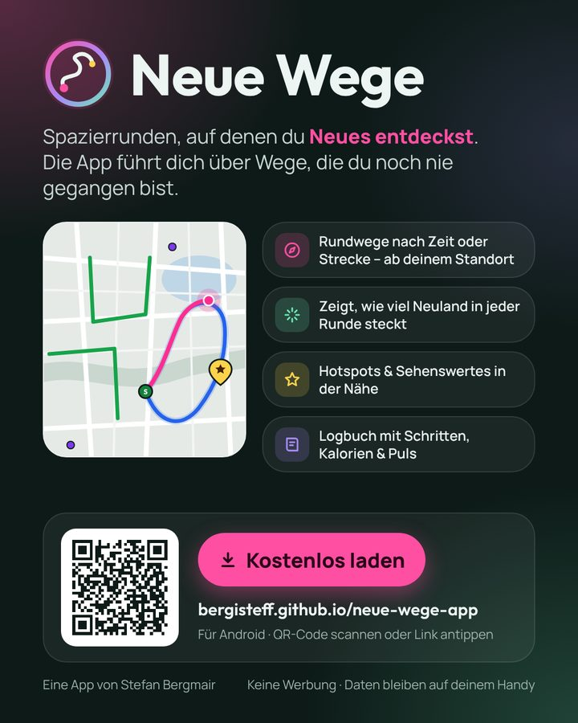

Neue Wege
Spazierrunden, auf denen du Neues entdeckst. Die App merkt sich, wo du schon warst, und plant Rundwege über Wege, die du noch nie gegangen bist.
Am PC? Mit dem Handy scannen.
Was die App kann
Runden planen
Nach Zeit oder Strecke, ab deinem Standort – drei Vorschläge auf echten Fußwegen.
Neuland entdecken
Zeigt, wie viel Neues in jeder Runde steckt. Gelaufene Wege werden grün.
Hotspots
Schöne Orte mit Foto merken – die Planung führt dich daran vorbei.
Logbuch
Alle Spaziergänge mit Strecke, Zeit, Schritten, Kalorien – und Puls von der Galaxy Watch.
Aufzeichnen in der Tasche
Läuft auch bei ausgeschaltetem Bildschirm, GPS-Ausreißer werden herausgefiltert.
Runden teilen
Lieblingsrunde per WhatsApp schicken – der andere öffnet sie direkt in der App.
So installierst du sie
- Auf „Kostenlos laden“ tippenDie Datei
NeueWege.apkwird heruntergeladen. Falls der Browser warnt: „Trotzdem herunterladen“. - Datei öffnenÜber die Benachrichtigung oder im Ordner „Downloads“.
- Installation erlaubenBeim ersten Mal fragt Android, ob dein Browser Apps installieren darf → „Zulassen“ bzw. „Aus dieser Quelle zulassen“, dann „Installieren“. Die App stammt nicht aus dem Play Store, deshalb diese Frage.
- Starten und Standort erlaubenStandort, Benachrichtigungen und „Körperliche Aktivität“ (Schritte) erlauben. Für die Aufzeichnung in der Tasche am besten unter „Daten“ die Akku-Optimierung ausschalten.
- Routen-Schlüssel eintragenZum Planen braucht die App einen kostenlosen Schlüssel: auf openrouteservice.org anmelden (z. B. mit Google oder GitHub), im Dashboard den „Basic Key“ kopieren und in der App unter „Daten“ einfügen.
